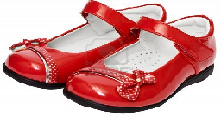
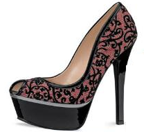
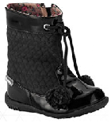
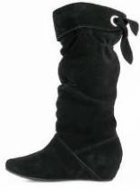

back
OTOÑO
ZAPATOS CINTHIA
Zapato de charol en color rojo, corte a 2 piezas: 1 pieza que forma todo el zapato unida en costura en la parte lateral exterior del calzado. 1 pieza que forma el asa para abrochar con velcro. Condecorativo en la parte de frente en 2 cintas de charol plata y rojo con lunares blancos y moño encima de las cintas. Suela anti derrapante y flexible.

ZAPATO ENCAJE
Con plataforma, tacón y tapa de plástico sintético, corte en una sola pieza de piel porcina color rosa cubierto de material textil color negro en forma de encaje, con abertura en la parte frontal y bordes de color negro.

Pie de página
BOTAS MOTITAS
Suela de caucho anti adherente en color negro, corte en 4 piezas de gamuza piel de porcino y material textil ambos en color negro: 1 pieza en la parte frontal del pie. 1 pieza en la parte del talón del pie. 1 pieza que construye al resto de la bota de material textil. 1 pieza que forma el collar de piel porcina con decorativo de 2 motitas de material textil en estambre.

BOTA GAMUZA
suela de caucho anti adherente en color negro, corte en 6 piezas de gamuza negra: 1 pieza en la parte frontal del pie. 1 pieza en la parte del talón del pie. 1 pieza corrugada en la parte exterior del pie. 2 piezas corrugadas en el entre pie unidas con un cierre. 1 pieza que forma el collar de la bota la cual contiene un ojete de metal plateado con cintilla de gamuza como decorativo.

Pie de página